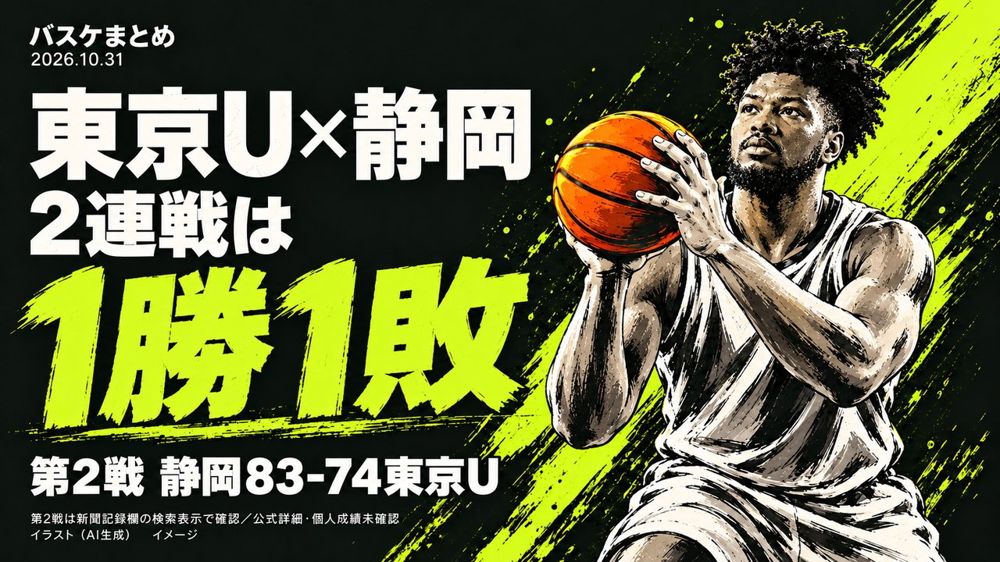

東京U×静岡は1勝1敗に、第2戦は静岡が83-74で快勝

B.ONE「東京U対静岡」の2連戦が終わりました。第1戦(10/29)は東京Uが69-68で勝ち、第2戦(10/30)は静岡が83-74で勝ちました。この記事は、10/27時点の独自比較と実際の結果を検証する内容です。
東京Uは東京ユナイテッドバスケットボールクラブ、静岡はベルテックス静岡です。2連戦は、同じ江戸川区スポーツセンターで行われました。両クラブの次節は、この記事の時点で未確認です。
【検証】第2戦は静岡が83-74で快勝、連戦は1勝1敗に
10月30日の第2戦は、静岡が83対74で東京Uに勝ちました。前日の第1戦は、東京Uが69対68で静岡に勝っています。2連戦の結果は、東京Uと静岡が1勝1敗で終わりました。
【検証】10/27時点の独自比較と、2試合の実際の結果
10月27日の記事では、登録選手の今季平均EFFランクイン数を比べました。東京Uは6人、静岡は3人でした。数値上は、東京Uに厚みがある内容でした。
実際の2連戦は、1勝1敗という結果でした。第1戦は1点差でした。第2戦は9点差で、勝敗が入れ替わりました。
登録選手の平均EFFの差は、出場や勝敗の確約にはならないと今回もわかります。これは独自の検証であり、的中をうたうものではありません。
2連戦のスコア
| 試合 | 日付 | 結果 |
|---|---|---|
| 第1戦 | 10/29 | 東京U 69-68 静岡 |
| 第2戦 | 10/30 | 静岡 83-74 東京U |
今後の日程について(未確認)
東京Uと静岡の次節は、この記事の時点で未確認です。公式サイト(bleague.jp)への直接接続ができず、確認できていません。次の確認機会に、あらためて取り上げます。
Q&A
Q. この記事は、次節の結果を予測するものですか？
A. いいえ。今回は2試合の結果を確認し、検証しただけです。次節の出場メンバーや結果は、未確認です。
出典:共同通信配信・地方紙の試合記録欄・B.LEAGUEチケット公式サイト
https://news.yahoo.co.jp/articles/f8aa5963ae12d19500300f5e8aa052324db01377(共同通信配信「バスケ東京U、静岡に競り勝つ りそなBリーグワン2部」、第1戦69-68の結果)
https://www.sanin-chuo.co.jp/articles/-/1107487(山陰中央新報「記録・りそなＢリーグワン(30日)」、第2戦の結果「静岡83-74東京U」を掲載)
https://ticket.bleague.jp/clubs/tu/events/DuoDvyJtJcGivtHlhCUe(B.LEAGUEチケット・東京U主催試合情報、第2戦の会場・開始時刻)
https://www.bleague.jp/game_detail/?ScheduleKey=507299(B.LEAGUE公式・東京U vs 静岡 試合詳細)
https://www.bleague.jp/news/injury.html(B.LEAGUE公式インジュアリーリスト)
article-daily-20261027.html(当サイト・10/27時点の独自EFF比較)
article-daily-20261030.html(当サイト・第1戦の結果検証と第2戦の見立て)
※ 本日もbleague.jpへ直接接続できず、試合詳細・インジュアリーリストのページは内容を開けていません。第2戦のスコアは、検索で確認した新聞の試合記録欄(山陰中央新報)の記載を根拠にしており、同じ記載を別の検索結果でも重ねて確認しましたが、記事本文を直接は開けていません。